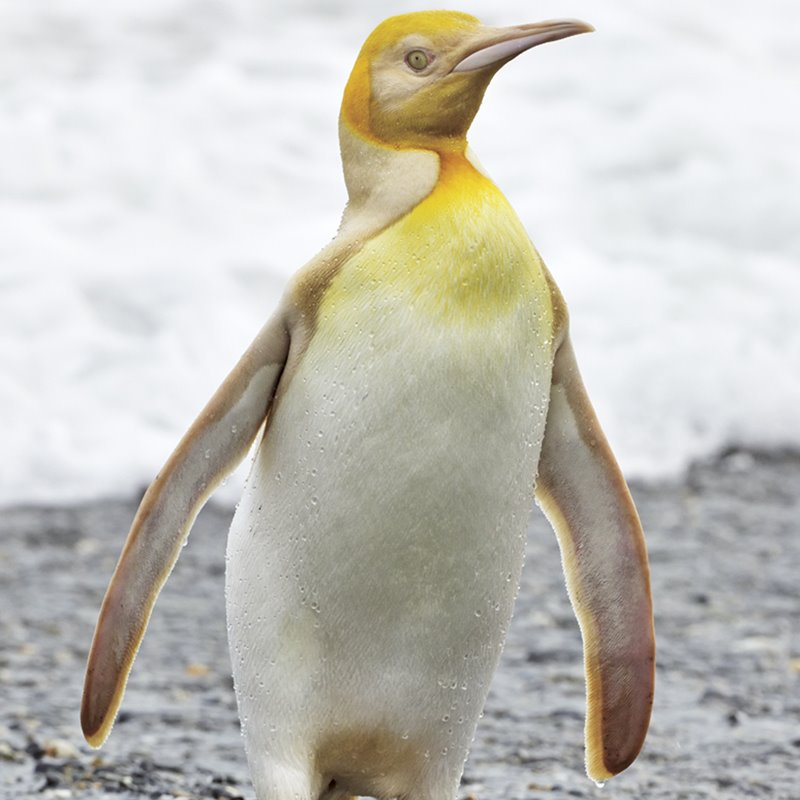

Los pingüinos (Spheniscidae) son una familia de aves, la única del orden Sphenisciformes. Son aves marinas, no voladoras, que se distribuyen casi exclusivamente en el hemisferio sur, exceptuando el pingüino de las islas Galápagos (Spheniscus mendiculus). El nombre del orden proviene del vocablo spheniscus y el sufijo diminutivo -iscus, literalmente "cuñita", haciendo referencia a su forma hidrodinámica al nadar. Se reconocen al menos dieciocho especies vivas agrupadas en seis géneros, que se distribuyen desde los ambientes polares hasta los tropicales en el hemisferio sur.
